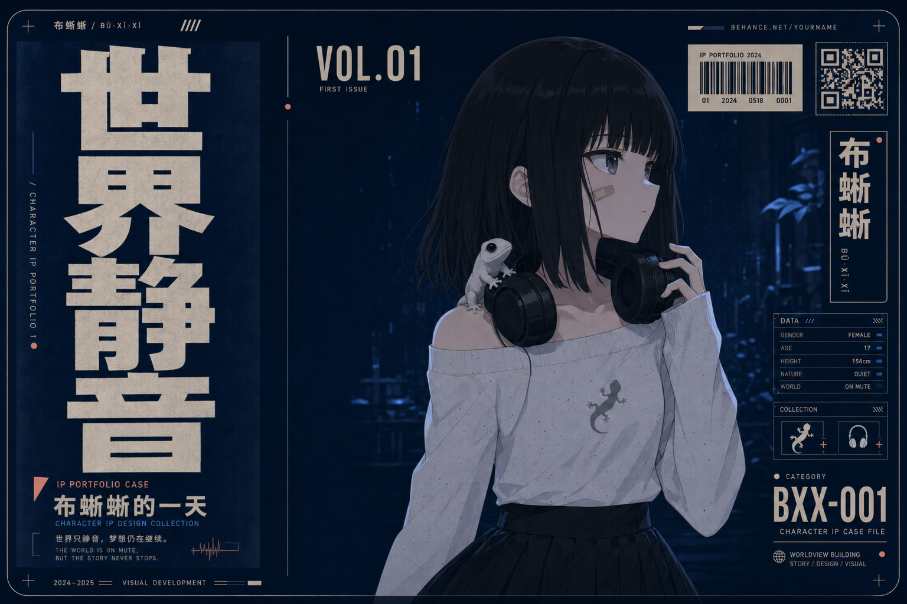
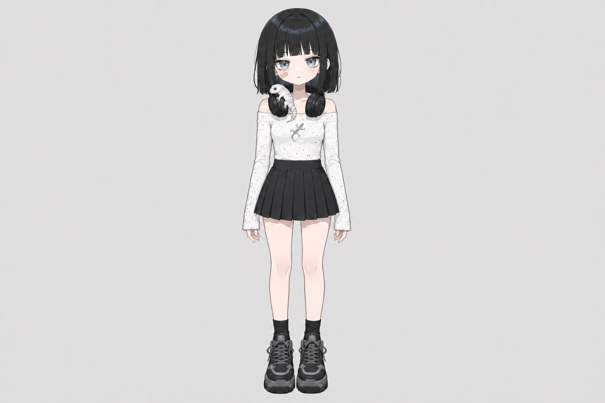
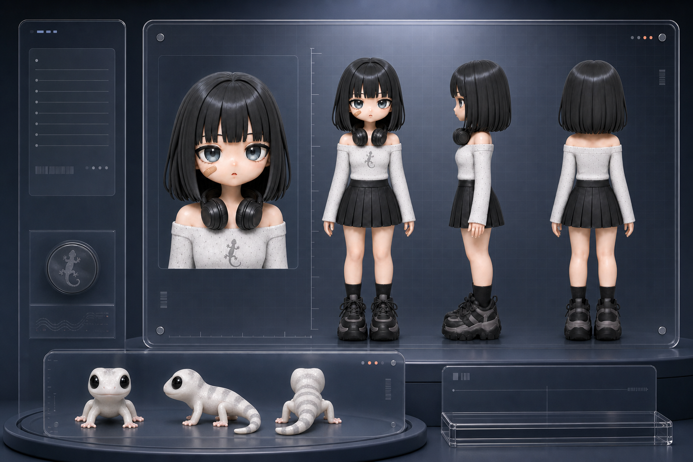
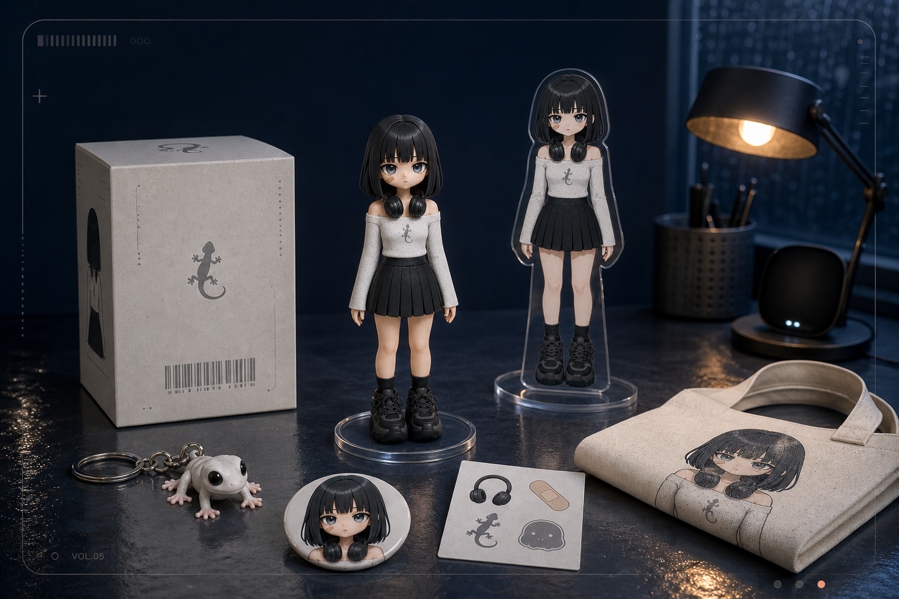

角色母版
黑发、耳机、创口贴、守宫标记与露指袖口组成第一眼识别点。

Character IP Case File / 2024-2025
世界只静音，梦想仍在继续。
核心不是“画了一个女孩”，而是把她的静音气质拆成可复用的视觉部件：角色母版、守宫搭档、三视图、透明贴纸、首发周边和一天叙事。 生成图负责提供氛围，网页重新接管文字、节奏和镜头，让这套 IP 像真正能交付的案子。
黑发、耳机、创口贴、守宫标记与露指袖口组成第一眼识别点。
人物与守宫拆开做三视图，保证后续手办、挂件、包装都能引用。
九张透明贴纸从“可爱图”转成可拖拽、可组合、可传播的表情件。
立牌、钥匙扣、贴纸、帆布袋和包装盒围绕同一套世界观出场。

Confirmed 2D Master
人物与守宫小布分开设定，正面、侧面、背面保持发片、耳机、裙摆和鞋型一致。 这页不靠图里的小字解释，而是用网页把生产逻辑、材质方向和搭档关系讲清楚。

每张单图保留白边、姿态和透明底，网页负责重新打光、命名、排布。它们不只是表情包，也是可进入海报、包装和社交图的镜头前景。

图像负责给出材质、摆放和冷光氛围；网页负责定义产品线、阅读顺序和商业落点。 访客不需要猜这套图能做什么，一眼就能看到它从角色走向货架。
场景图提供蓝调夜色和城市噪声，时间节点由网页重新排版。角色不只被看见，也开始拥有可继续写下去的日常。
后续若继续生成新图，角色外观优先引用 2D 定稿；潮玩质感优先引用人物三视图和守宫单独三视图； 表情系统优先引用九张透明单图。页面上的强光、裁切和动效可以变，角色锚点不变。